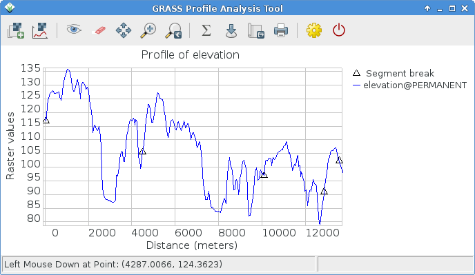
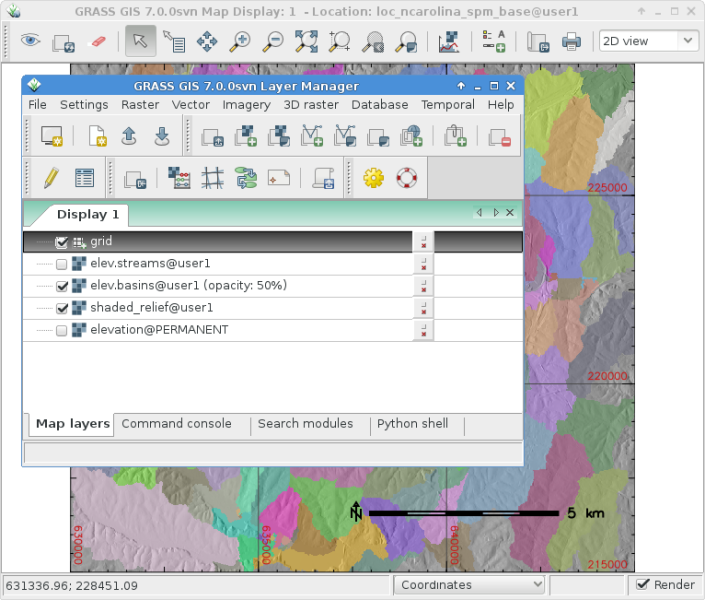

GRASS GIS Snabbstart¶
GRASS GIS är ett kraftfullt GIS som låter dig visualisera, hantera, analysera och redigera geospatiala data.
Innehåll
Start GRASS¶
Klicka på .
I fönstret ”Välkommen till GRASS GIS” väljer du datasetet ”nc_basic_spm_grass7” för platsen och ”user1” för kartsetet
Klicka på Start GRASS session.

Detta kommer att starta GRASS i det grafiska användargränssnittet (skrivet i wxPython).
Tips
Om du använder en netbook med en mycket liten skärm (800x600 upplösning) kan startskärmen bli lite skrynklig och knappen [Starta GRASS] döljs bakom listorna över platser och kartor. Om detta händer dig är lösningen att dra i fönstrets hörn för att göra det lite större. Du kanske måste flytta fönstret en bit upp förbi skärmens överkant för att få plats (håll ned Alt-tangenten och vänsterklicka på fönstret för att flytta det).
Visa en karta¶

Väl inne, välj för visning rasterkartlagret ”elevation” från PERMANENT-kartuppsättningen.
Gå in i fönstret GIS Layer Manager.
Klicka på knappen i verktygsfältet med ett ”+” på.
Välj det kartnamn du vill ha i rullgardinsmenyn ”karta som ska visas” och klicka på Ok.
Klicka på knappen i verktygsfältet med ett ”+” och en böjd polylinje som ser ut lite som ett ”V”.
Välj vektorlagret ”roadsmajor” från PERMANENT-kartuppsättningen och klicka på Ok.
Om det behövs kan du högerklicka på rasterkartlagret och välja ”Zoom to selected map(s)”.
Du bör nu se kartorna visas.
Rita upp en höjdprofil¶
{kind=link}
Tillbaka i fönstret GIS Layer Manager klickar du på namnet på rasterkartan elevation för att välja den. I fönstret Map Display, till höger om zoomknapparna i verktygsfältet Map Display finns sedan en ikon med ett linjediagram och en schackbräda. Klicka på den och välj Profile surface map. Kartuppsättningen @PERMANENT söks automatiskt. Om kartan inte listas automatiskt väljer du återigen elevation-kartan som rasterlager och trycker på Ok. I fönstret GRASS Profile Analysis Tool välj den andra knappen från vänster, den låter dig lägga ut profillinjen, klicka på den och markera sedan några punkter på Map Display duken. När du är klar går du tillbaka till fönstret Profile. Klicka på I/O-knappen längst till höger för att stänga profilfönstret.
Justera färgerna på rasterkartan¶
Nu kommer du att se din nya rasterkarta läggas till i lagerlistan tillsammans med höjdrasterkartan, förutom den här gången kommer den att finnas i din ”user1” arbetskartuppsättning. Du kan avmarkera kryssrutan för synlighet för höjd -lagret nu så att de två rasterlagren inte ritar över varandra. Klicka på kryssrutan för att visa din nya karta om den inte renderas automatiskt. Färgerna kanske inte är som du vill ha så låt oss ändra dem. Med den fraktala DEM markerad i lagerlistan högerklickar du på namnet på detta rasterkartlager och väljer ”Set color table”. Som ett alternativ kan du hantera färgtabeller i menyn Raster välj . På fliken ”Definiera” klickar du på rullgardinsmenyn för alternativet ”Namn på färgtabell” och väljer ett från listan. ”terrain” eller ”srtm” är bra val. När du är klar klickar du på [Kör]-knappen och stänger dialogfönstret r.colors. Färgerna bör då uppdateras automatiskt.
Skapa en skuggad reliefkarta¶

Nu ska vi skapa en skuggad reliefkarta av elevation-lagret som vi såg tidigare. Börja med att kontrollera att beräkningsregionen är inställd på att matcha rasterkartan av intresse, ”elevation” i PERMANENT-kartuppsättningen. För att göra detta, se till att det är laddat i lagerlistan i huvudfönstret GIS Layer Manager, högerklicka på dess namn och välj ”Ställ in beräkningsregion från vald karta (er)”. Om det behövs, klicka på fliken ”Layers” längst ned för att komma tillbaka till lagerlistan.
I Raster-menyn väljer du (Terrain analysis ligger ungefär halvvägs ner i Raster-menyn), och dialogrutan för modulkontroll visas. Välj ”elevation” @PERMANENT-kartan som inmatningsnamn och som utmatningskarta kan du ange ”shaded_relief”. När du är klar klickar du på [Run]. Nu bör du se att den nya kartan shaded_relief @user1 har lagts till i din lagerlista. Avmarkera de andra rasterlagren för att bara visa det nyskapade rasterlagret för skuggad lättnad.
Lägg till vattendelare och vattendrag¶
Välj återigen kartan elevation @PERMANENT. Om du ändrade regionen sedan förra steget, högerklicka återigen på lagernamnet och klicka på :menuselection:Set computational region from selected map(s) från snabbmenyn för att ta hänsyn till hela kartan för beräkningen av vattendelaren.
Observera
Vyn och zoomen i wxGUI:s kartvisning är oberoende och påverkar inte bearbetningsberäkningarna. Kontrollera beräkningsregionen när som helst med :menuselection:` Settings –> Region –> Display Region; detta är av grundläggande betydelse för alla rasternätoperationer. Rasterkartor med olika gränser och upplösning kommer att omsamplas till den aktuella beräkningsregionen i farten.
Välj sedan i Raster-menyn . Detta kommer att öppna modulen r.watershed. Välj elevation-lagret som din inmatningskarta, på samma flik ”Inputs” ställer du in ”Minimum size of the exterior watershed basin” threshold till 10000 celler, sedan anger du på fliken ”Outputs” ”elev.basins” för alternativet ”Name for basins raster map” basins och ”elev.streams” för alternativet ”Name for output stream segments raster map” streams strax under det. Klicka sedan på [Kör].
Tillbaka i fönstret GIS Layer Manager kontrollera att de två nya rasterkartorna finns i lagerlistan och se till att bassängkartan är markerad för visning i rutan till vänster om lagernamnet. Du kan avmarkera strömmarnas karta för tillfället. Högerklicka sedan på rasterkartans lagernamn ”elev.basins” och välj ”Change opacity level”. Ställ in den på cirka 50% vilket kommer att återge kartdisplayen. Dra ett kartlager (t.ex. den tidigare skapade skuggade reliefkartan) längre ner i lagerlistan om du vill att det ska ritas bakom kartlagret för avrinningsområden, och se till att kryssa i rutan för synlighet för att se det som en bakgrund.
{kind=link}
I fönstret GIS Layer Manager klickar du på knappen Add various overlays och Add grid layer. Som storlek på rutnätet anger du 5000 (i kartanheter, här meter). När du är klar trycker du på OK. Alternativt kan du ändra färgerna för rutnätslinjerna och textetiketterna.
För att lägga till en scalebar går du till fönstret ”Map Display” och trycker på knappen ”Add map elements” till höger om där du valde profilverktyget tidigare och väljer ”Show/hide scalebar” och klickar sedan på Ok. En scalebar visas längst upp till vänster på kartbilden. Dra ner den till nedre högra hörnet.
Nu kanske du tänker att de här teckensnitten är lite tunna. Det är lätt att åtgärda i menyerna i GIS Layer Manager öppna och på fliken Kartvisning klicka på knappen [Set font], välj ett (till exempel DajVu Sans Bold) och sedan [Save] eller [Save for this session only] i inställningsfönstret. Du måste göra en fullständig omrendering för att se förändringen, så klicka på omrenderingsknappen först i fönstret Map Display. Teckensnitten kommer nu att vara mycket snyggare.
Arbeta med vektormoduler¶
Ovanstående uppgifter har bara täckt några få rastermoduler. Låt dig inte förledas att tro att GRASS GIS bara är till för rasterkartor - vektormotorn och modulerna är precis lika fullfjädrade som rastermodulerna. GRASS GIS har en helt topologisk vektormotor som tillåter alla möjliga typer av mycket kraftfulla analyser.

Vi fortsätter med de avrinningsområden som skapades ovan och konverterar dem nu till vektorpolygoner. I Raster-menyn väljer du . I dialogrutan r.to.vect som öppnas kontrollerar du att elev.basins @user1 har valts som inmatningskarta, ger utmatningskartan ett namn som basins_areas (namn på vektorkartor måste vara SQL-kompatibla, så alla tecken är inte tillåtna) och ändrar ”Output feature type” till area. På fliken Attributes kryssar du i rutan för att använda rastervärden som kategorinummer (dvs. ID:n), eftersom dessa kommer att matcha värdena i vår rasterkarta över strömsegment som skapades tidigare. Klicka sedan på [Kör]. När den nya vektorkartan visas kan du högerklicka på den i listan Layer Manager och ändra dess opacitetsnivå till 50%.
Justera färgerna på vektorkartan¶
Som vi gjorde tidigare med en rasterkarta kommer vi att ändra färgtabellen för den nya vektorkartan för avrinningsområden. Med basins_areas markerat i lagerlistan högerklickar du på namnet på detta vektorkartlager och väljer ”Set color table”. På fliken ”Definiera” klickar du på rullgardinsmenyn för alternativet ”Namn på färgtabell” och väljer till exempel ”bcyr” (blå-cyan-gul-röd) från listan. När du är klar klickar du på knappen [Run] och stänger dialogfönstret v.colors. Du kan behöva rita om kartan för att se den färgade vektorkartan.

Hantera attribut och variationer för denna variabla produkt¶
Därefter lägger vi till några attribut till de nya områdena, som innehåller den genomsnittliga höjden i varje bassäng. I vektormenyn väljer du . Använd basin_areas som vektorpolygonkarta och välj rasterkartan elevation att beräkna statistiken från; ställ in ”Column prefix for new attribute columns” till elev och klicka på [Run]; stäng sedan dialogen när den är klar. Du kan fråga efter värdena i fönstret Map Display genom att använda den fjärde ikonen från vänster och efter att ha kontrollerat att kartan med vektorområden är vald i Layer List, klicka på ett vektorområde i kartbilden.
Du kan nu färglägga områdena baserat på de genomsnittliga höjdvärdena med hjälp av modulen v.colors. I vektormenyn väljer du . Välj basin_areas för den ingående vektorkartan, som ”Source value” välj attr istället för cat. På fliken ”Definiera” väljer du sedan attributkolumnen elev_average för den kolumn som innehåller det numeriska intervallet. Färgerna vill vi kopiera från rasterkartan elevation, så vi väljer den som namn för ”Raster map from which to copy color table”. När du har klickat på [Kör] måste du uppdatera kartvisningen (första ikonen från vänster) för att se den uppdaterade bassängkartan.
Låt oss nu titta på attributtabellen och SQL-byggaren mer i detalj. I Layer Manager klickar du på tabellikonen (”Show attribute data for selected vector map”), den är andra från vänster på den nedre raden. Detta öppnar en vy över databastabellen som är kopplad till den valda vektorkartan. Nu ska vi bara göra en enkel databasfråga för att hitta avrinningsområden utan så mycket variation. Där det står SELECT * FROM basin_areas WHERE välj elev_stddev från rullgardinsmenyn för standardavvikelsestatistiken, välj sedan < från relationslistan och ange < 50 i textrutan till höger och klicka på [Apply]. Du kommer att märka att antalet inlästa poster i informationsfältet längst ned i fönstret har minskat och att alla rader med stora värden för standardavvikelse (std. dev.) nu har försvunnit från den tabell som visas. Högerklicka på tabelldata och välj Select all. Högerklicka igen på tabelldata och välj den här gången Highlight selected features. Du bör se att t.ex. alluviala översvämningsbassänger och mesas dyker upp i ”Map Display”.
Visa en 3D-visualisering¶

För att starta 3D-visualiseringssviten väljer du kartan elevation som rasterhöjd i Layer list och markerar dessutom posten, sedan väljer du i fönstret Map Display ”3D view” (i högra änden av verktygsfältet). När gränssnittet för 3D-visning har laddats ser du flera flikar för kontroll av 3D-visningen. Välj sedan fliken ”Data” och ställ in den fina upplösningen på ”1” (ju lägre värde, desto finare upplösning) och flytta sedan positioneringspucken och höjdreglaget på fliken ”View” för att få olika vyer.
För att drapera kartor, satellit- eller flygbilder över toppen av DEM, i fliken ”Data”, välj som namn för Surface Attributes-kartan överläggningsbilden ”landuse” i PERMANENT-kartuppsättningen är ett bra val. Den nya vyn renderas omedelbart. Eftersom området är relativt platt kan du gå tillbaka till fliken ”View” och öka Z-överdimensioneringen (”z-Exag”).
För enkel navigering i 3D-vyn kan du aktivera ”Rotera 3D-scen” i verktygsfältet för kartvisning och sedan använda musen för att flytta runt vyn.
Saker att prova¶
Även om det inte tas upp här kanske du vill experimentera med Cartographic Composer och det objektorienterade Graphical Modelling Tool (erbjuder export till Python). Du hittar ikoner för att starta dem på den nedre raden av ikoner i fönstret Layer Manager. Mer information finns i hjälpsidorna för wxGUI.
API¶
WxGUI är skrivet i Python, och om du gillar Python-programmering finns det ett antal bra verktyg och ett API tillgängligt för dig. Längst ner i fönstret Layer Manager klickar du på fliken Python shell och skriver help(grass.core) för att se en lista över de många funktioner som finns i GIS pythonbibliotek. Förutom GIS-kärnfunktionerna finns även biblioteken array (NumPy), db (databas), raster och vector tillgängliga. För avancerad användning stöds Pythons Ctypes som ger Python-programmeraren direkt tillgång till GRASS GIS omfattande C-bibliotek. Se manualsidorna för en utförlig beskrivning av programmeringsalternativen.
Kommandorad¶
I GRASS-terminalsessionen kan du prova en GRASS-modul genom att skriva ”v.clean --help”, vilket ger dig en lista med modulalternativ. Det är på GRASS kommandorad som GIS:ets verkliga kraft kommer till sin rätt. GRASS är utformat så att alla kommandon kan kopplas samman i skript för stora massbearbetningsjobb. Populära skriptspråk är Bourne Shell och Python, och många smarta trick för att göra skriptningen enklare ingår för båda. Med dessa verktyg kan du skapa en ny GRASS-modul med bara ca 5 minuters kodning, komplett med kraftfull parser, GUI och mall för hjälpsida.
”g.manual -i” kommer att starta en webbläsare med modulens hjälpsidor. När du är klar stänger du webbläsaren och skriver ”exit” på GRASS terminalprompt för att lämna GIS-miljön.
Hur vill du gå vidare?¶
Besök GRASS GIS webbplats på https://grass.osgeo.org
Besök GRASS GIS Wikis hjälpwebbplats på https://grasswiki.osgeo.org/wiki/
Fler handledningar och översikter finns här <https://grasswiki.osgeo.org/wiki/GRASS_Help#Getting_Started>`_.
Om de 400 GIS-modulerna som medföljer GRASS inte räcker till kan du ta en titt på de många tilläggsmodulerna som finns på https://grass.osgeo.org/grass-stable/manuals/addons/ <https://grass.osgeo.org/grass-stable/manuals/addons/>`_